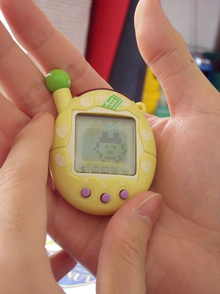
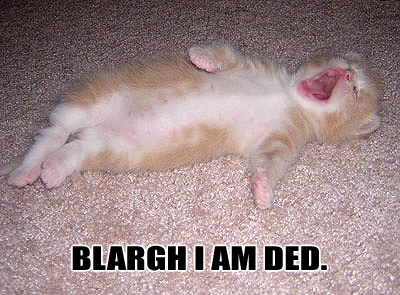
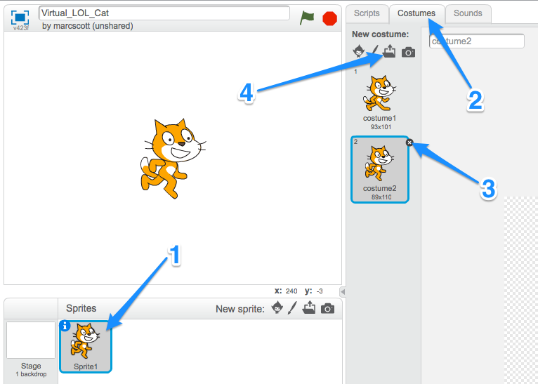
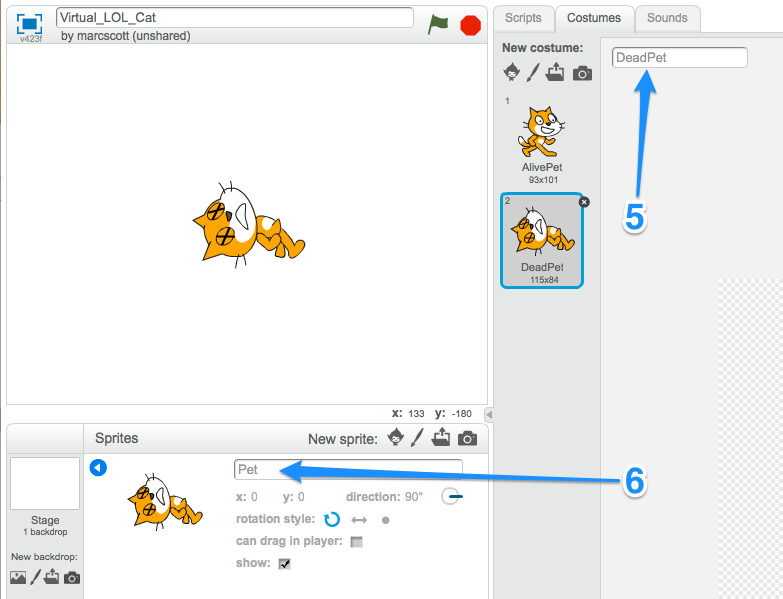

A Virtual LOLcat in Scratch
Table of Contents
1 Virtual Pets
Learn It

- Virtual pets were very common and popular a few years ago.
- Pets such as the Tamagotchi were tiny computers with software on them that simulated a pet.
- The owner of the pet had to feed it and pet it otherwise the pet would die.
- You're going to be making your own virtual pet in Scratch.
Research It
- Use the web to find out some of the features that were common to most virtual pet games. A list has been started for you below:
- Feeding
- Petting
- Scolding
2 Killing our pet

- Create a new Scratch project called
Virtual_LOL_Cat - No matter how good a gamer you are, your character always dies in the end. So that's the first thing we'll be setting up.
Research It
- We'll need a couple of images to begin with.
- One to represent the living pet.
- One to represent the dead pet.
- Here are the ones I'll be using, but you can make your own or go online and find ones that appeal to you.

Code It
Our first script is going to kill the pet, whenever the space bar is pressed. Killing the pet will actually just be a case of changing the sprite's costume.
- Click on the Sprite1 costume.
- Click on the Costumes tab
- Delete the costumes you don't need.
- Use the Upload button to add in the costumes for both you alive and dead pet.

Code It
Now we just need to make sure everything has a sensible name
- Name both costumes
- Name your Sprite

Badge It - Silver
- We now need to write a little script to kill the pet.
- Look at the code below and see if you can assemble the script.
when space key is pressed say "You let me die!!!" switch to DeadPet wait 2 secs stop all
- Take a screenshot of your script when you have completed it.
Run It
- Run your script.
- When you hit the space key, the pet should die.
- The problem is that the pet stays dead.
Try It
- We need a way of resetting the script.
- Try to code the following.
When 'Green Flag' clicked Switch to Costume "AlivePet" Goto position x:0 y:-125
- You might need to adjust the
y:coordinate, depending on the size of the sprite you are using.
Run It
- Test your script to make sure it runs.
- Your pet should die when the space key is pressed, and then reset when you click the green flag
Badge It - Gold
- The current pet death is a little undramatic.
- Add a little bit of animation into it, so that the pet falls over when it dies.
- Add a sound effect when the pet dies
- Change the pet's costume when it dies, so that it looks like a dead pet.